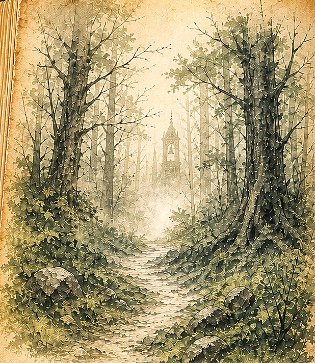

Chapter IIIThe Bell in the Mist
The Bell in the Mist
✦
The trees close in around you. Mist coils along the path, and somewhere ahead a bell tolls once.
You stop. The sound hangs in the cold air, round and low, the way a stone hangs in deep water.
You have walked this road since you were a child. There was never a bell on it.
The second toll comes softer than the first, as though the mist itself were swallowing it.
What will you do?